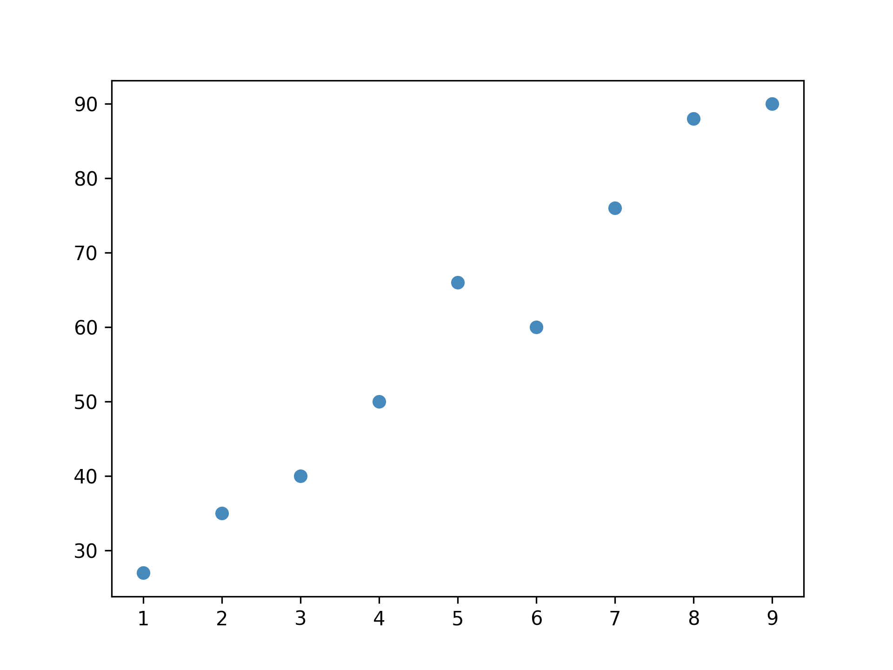

迴歸
Table of Contents

1. 關於迴歸
即，根據一組預測特徵（predictor，如里程數、車齡、品牌）來預測目標數值（如二手車車價）1、根據歷史股價來預測明天股價、根據路況來預測方向盤轉向及車速。
部份迴歸演算法也可以用來分類，例如Logistic，它可以輸出一個數值，以這個數值來表示對應到特定類別的機率，例如，某封email為垃圾郵件的機率為20%、某張圖片為狗的機率為70%。
1.1. 迴歸類型
迴歸問題可分為兩類：
- Linear regression:
- Logistic regression
1.1.1. Linear regression:
- 假設輸入變量(x)與單一輸出變量(y)間存在線性關係，並以此建立模型。
- 優點: 簡單、容易解釋
- 缺點: 輸入與輸出變量關係為線性時會導致低度擬合
- 例: 身高與體重間的關係
Linear regression可再細分為
Simple Linear regression (簡單線性迴歸):

Multiple Linear regression (多元線性迴歸)
Figure 1: 多元線性迴歸
討論多個變數間的關係，Multiple Linear Regression 是線性迴歸的一種延伸，當輸出變量 \(y\) 與多個輸入變量 \(x_1,x_2,…,x_n\) 之間存在線性關係時，可使用多元線性迴歸來建模:
\[y=ax_1+bx_2+cx_3+⋯+zx_n+ϵ\]
其中
- \(y\): 輸出變量 (應變數)
- \(x_1,x_2,…,x_n\): 輸入變量 (特徵值)
- \(a,b,c,…,z\): 係數 (權重)
- \(ϵ\): 誤差項 (Residual)
1.1.2. Logistic regression
- 也是線性方法，但使用logist function轉換輸出的預測結果，其輸出結果為類別機率(class probabilities)
- 優點: 簡單、容易解釋
- 缺點: 輸入與輸出變量關係為線性時無法處理分類問題
1.1.3. 迴歸的目的
建立迴歸的目的在於從現有資料中找出規則，然後依此規則來對後續的新進資料進行預測。如圖2中有一些資料分佈，x、y軸為資料的兩個特徵值。

Figure 2: 原始資料分佈
我們可以畫出幾條直線來代表這些資料的趨勢，問題是：
- 怎麼畫
- 怎麼知道哪一條最有代表性

Figure 3: 根據原始資料畫出的幾條迴歸線
典型迴歸案例: Boston Housing Data
2. 迴歸原理
練習投藍的時後，我們需要知道籃筐位置，誤差多少，1做出丟球的修正。
做 Machine Learning 也是一樣道理，我們需要 :
2.1. Step 1: Model, Data
- Model: \(y = w*x+b\)
- Data: 找一堆現成的資料
2.2. Step 2: Goodness of Function
- Training Data
- Loss function L: 越小越好
input: a function / output: how bad it is - Pick the Best Function :
\(f* = \arg\min L(f)\)
上述可以微分來求最佳解，即求 function L 的最小值 - 數值最佳解: Gradient Descent(找拋物線/面最低點)
3. 線性迴歸: 學期成績預估
3.1. 函數: AI的本質
人工智慧本質上就是在找出一個特定函數。例如，我們想利用人工智慧來預估自己這個學期的資訊科成績，其實相當於在找一個類似這樣的函數：
\[f(期中考成績,期末考成績)→學期總成績\]
有了這個函數，只要我們輸入這學期的兩次段成績，就能算出自己的學期總成績。但像這樣的函數f有無限多個，其中一種可能的計算方式如下：
\[期末成績=0.4×期中考成績+0.6×期末考成績\]
，此處的0.4, 0.6就稱為這個函數的參數（parameter）。
為了找出這個函數，我們首先應蒐集歷屆學長姐的成績資料（包括兩次段考平均成績與學期總成績），這些資料稱之為訓練資料（training data）。在將訓練資料視覺化後，我們發現x與y的分佈如圖4所示（假設我們詢問了10位學長姐、收集了10筆訓練資料），初步猜測二者可能存在線性關係。接下來的任務就是畫出一條能儘量接近圖上所有資料點的線，也就是找出最佳的參數a（即這條迴歸線的斜率）。

Figure 4: 兩次段考平均與學期總成績關係
3.2. 逐步找出最佳的a
雖然在此例中最佳的a可以很快用數學公式求出，但此處我們打算介紹另一種逐步找出最佳a的方式，步驟詳列如下：
3.2.1. a=0.5
1: import matplotlib 2: print('cc')
cc
首先，面對未知的困難，我們要有嚴格的解題SOP，也就是要遵循「科學、理性、務實」的精神：閉著眼睛隨便給個 \(a\)。例如：a=0.5，畫出的迴歸線結果如圖5。

Figure 5: a=0.5的迴歸線
有了這條線，我們就可以找出這10筆資料與這條線有多遠。理想狀況下我們希望每個點都離線越近越好，把所有點與迴歸線的距離（圖5中的橘色線段）加總起來，我們把它稱為誤差。此處以均方差（Mean Squared Error, MSE）來計算，誤差值為367.76。MSE公式如下：
\[MSE=\frac{1}{n}\sum_{i=1}^{n}{(y_i-\widehat{y_i})}^2\]
，這裡的MSE就是這個模型的損失函數（Loss Function） 。
3.2.2. a=0.4, a=0.6
但是目前的a(0.5)是最好的嗎？我們可以試著調整a值，對它各加、減0.1，再來觀察誤差的變化，結果如圖6，可以發現a再大一些結果似乎會更好。

Figure 6: a=0.4 v.s. a=0.6
3.2.3. 全部的a
當我們把全部合理的 a 值（如\(0.3 \le a \le 1.4\)）對應的損失函數逐一計算出來後，就可以將這些結果畫成一條如圖7的曲線，這就是這個模型的損失函數曲線（Loss Function Curve）。不難看出：只要將a逐步往損失函數較小的方向調整，這個模型的預測效果就會更好。另一種調整a值的方式是透過資料點在曲線上的切線（圖中綠色虛線）斜率來判斷該往左或右移動a值，直到找到切線斜率為0的點，這便是曲線的最低點，也是最佳a值。此函數如下，也是我們用來預估分數的模型：
\[y=f\left(x\right)=0.84x\]

Figure 7: 合理a值畫出的誤差函數
3.3. 兩項成績推估
如果老師的計分是針對期中期末考給予不同權重呢？那我們新的目標函數就要改成如下式子，此時的任務在求出最佳的參數a, b。
\[y=f\left(x\right)=ax_1+bx_2\]
，其中 \(x_1\) 為兩次段考平均成績, \(x_2\) 為學期總成績。
比照上述步驟的做法，我們可以求出所有合理的a, b值（0～1）及其所對應的損失函數，將結果畫成如圖 2.2 5的曲面。實際求解時，一樣先隨機指定一組權重值a, b（圖8藍色點），依該點在曲面上的斜率（此處稱為梯度，Gradient） ，沿著梯度的反方向往下找，就能找到這個曲面的最低點（圖7紅色點），該點便是函數的最佳參數。此種做法也就是神經網路中找出模型最佳參數的核心思想：梯度下降法（Gradient Descent）。
Figure 8: 兩個參數時的誤差函數
3.4. 神經網路的視角
從神經網路的角度來看，上述函數也可以視為如圖 2.2 6的模型，模型中只有一層隱藏層，裡面只有一個神經元，輸出結果為期末成績，這便是一個能進行迴歸計算的神經網路。
Figure 9: 以兩項成績預估學期成績的神經網路
4. 線性迴歸實作: 波士頓房價預測
- 本例中部份程式碼及文字來自What impacts Boston Housing Prices
- 本例使用資料集為 1970 年中期 Boston 郊區資料，包含犯罪率、當地財產稅等，用以預測某郊區房價中位數，本例有 506 筆資料，分為 404 個訓練樣本和 102 個測試樣本，但每個 feature 的單位不同，故須先進行資料預調整。
4.1. 下載資料
1: import pandas as pd 2: 3: housing = pd.read_csv('https://raw.githubusercontent.com/letranger/AI/gh-pages/Downloads/boston_housing.csv')
也可以用tensorflow的load_data()直接下載，但這組沒有column title
1: import matplotlib.pyplot as plt 2: from tensorflow.keras.datasets import boston_housing 3: 4: (train_x, train_y), (test_x, test_y) = boston_housing.load_data()
4.2. 大概觀察一下資料集
1: print(type(housing)) 2: print(housing.shape) 3: print(housing.iloc[0])
<class 'pandas.core.frame.DataFrame'> (506, 14) crim 0.00632 zn 18.00000 indus 2.31000 chas 0.00000 nox 0.53800 rm 6.57500 age 65.20000 dis 4.09000 rad 1.00000 tax 296.00000 ptratio 15.30000 b 396.90000 lstat 4.98000 medv 24.00000 Name: 0, dtype: float64
這個資料集共有506筆資料，前13個為特徵值，最後一個medv為房價。其他特徵值分別代表:
- CRIM: per capita crime rate by town
- ZN: proportion of residential land zoned for lots over 25,000 sq.ft.
- INDUS: proportion of non-retail business acres per town
- CHAS: Charles River dummy variable (= 1 if tract bounds river; 0 otherwise)
- NOX: nitric oxides concentration (parts per 10 million)
- RM: average number of rooms per dwelling
- AGE: proportion of owner-occupied units built prior to 1940
- DIS: weighted distances to five Boston employment centres
- RAD: index of accessibility to radial highways
- TAX: full-value property-tax rate per $10,000
- PTRATIO: pupil-teacher ratio by town
- B: 1000(Bk - 0.63)^2 where Bk is the proportion of blacks by town
- LSTAT: % lower status of the population
- MEDV: Median value of owner-occupied homes in $1000’s
4.3. 資料預處理
4.3.1. 處理缺漏值
快速檢查是否有缺漏值
1: print(housing.isnull().sum())
crim 0 zn 0 indus 0 chas 0 nox 0 rm 0 age 0 dis 0 rad 0 tax 0 ptratio 0 b 0 lstat 0 medv 54 dtype: int64
刪掉有缺失值的資料
1: housing.dropna(axis=0, inplace=True) 2: print(housing.isnull().sum()) 3: print(housing.shape)
crim 0 zn 0 indus 0 chas 0 nox 0 rm 0 age 0 dis 0 rad 0 tax 0 ptratio 0 b 0 lstat 0 medv 0 dtype: int64 (452, 14)
4.3.2. 資料標準化
由第一筆訓練資料特徵housing.iloc[0]可以看出，每項特徵值的差異甚大，我們可以先對這些資料特徵進行標準化：
1: print(housing.iloc[0,:-1]) 2: 3: mean = housing.iloc[:,:-1].mean(axis=0) 4: housing.iloc[:,:-1] -= mean 5: std = housing.iloc[:,:-1].std(axis=0) 6: housing.iloc[:,:-1] /= std 7: 8: print(housing.iloc[0,:-1])
crim 0.00632
zn 18.00000
indus 2.31000
chas 0.00000
nox 0.53800
rm 6.57500
age 65.20000
dis 4.09000
rad 1.00000
tax 296.00000
ptratio 15.30000
b 396.90000
lstat 4.98000
Name: 0, dtype: float64
<string>:5: FutureWarning: Setting an item of incompatible dtype is deprecated and will raise in a future error of pandas. Value '0 -6.823009
1 -5.823009
2 -5.823009
3 -4.823009
4 -4.823009
...
501 -6.823009
502 -6.823009
503 -6.823009
504 -6.823009
505 -6.823009
Name: rad, Length: 452, dtype: float64' has dtype incompatible with int64, please explicitly cast to a compatible dtype first.
crim -0.566733
zn 0.217000
indus -1.176220
chas -0.289391
nox -0.024739
rm 0.347120
age -0.012727
dis 0.022210
rad -0.904489
tax -0.538187
ptratio -1.339563
b 0.394920
lstat -1.049614
Name: 0, dtype: float64
4.4. 觀察資料
4.4.1. 初步看一下房價的分佈
1: import matplotlib.pyplot as plt 2: import seaborn as sns 3: 4: sns.histplot(housing['medv']) 5: plt.savefig("images/housing-price.png", dpi=300)

Figure 10: 房價分佈概況
4.4.2. 各特徵值間的關係
1: correlation_matrix = housing.corr().round(2) 2: # annot = True 讓我們可以把數字標進每個格子裡 3: sns.heatmap(data=correlation_matrix, annot = True) 4: plt.savefig("images/housing-corr.png", dpi=300)

Figure 11: 特徵值間的闗係
由圖11可以看出：
- 跟MEDV（房價）高度相關的是LSTAT（中低收入戶佔當地居住人口的比例）和RM（房子有幾間房間）這兩個變數。
- 此外也看到DIS（到波士頓商業中心的距離）和AGE（屋齡），INDUS（非零售業土地使用比例）和ZN（居住使用土地比例）這兩組變數有多元共線性問題，所以未來如果要做其他模型，避免同時使用這兩組中的變數。
所以目前可以用LSTAT和RM來做出預測MEDV的模型。再次把這兩個變數跟房價變數的關係畫出來，可以看到兩者和房價變數都接近線性關係：
1: # 設定整張圖的長寬 2: plt.figure(figsize=(20, 10)) 3: features = ['lstat', 'rm'] 4: target = housing['medv'] 5: for i, col in enumerate(features): 6: # 排版1 row, 2 columns, nth plot：在jupyter notebook上兩張並排 7: plt.subplot(1, len(features) , i+1) 8: # add data column into plot 9: x = housing[col] 10: y = target 11: plt.scatter(x, y, marker='o') 12: plt.title(col) 13: plt.xlabel(col) 14: plt.ylabel('medv') 15: plt.savefig('images/housing-2var.png', dpi=300)
Figure 12: Caption
4.4.3. 準備訓練用的資料
先拿兩項特徵值來試一下水溫: lstat和rm
1: import numpy as np 2: X = housing[['lstat', 'rm']] 3: Y = housing['medv'] 4: print(X) 5: print(Y)
lstat rm
0 -1.049614 0.347120
1 -0.373898 0.116169
2 -1.203924 1.261927
3 -1.380974 0.981486
4 -0.992763 1.204939
.. ... ...
501 -0.287809 0.374115
502 -0.383644 -0.335236
503 -0.942409 0.948493
504 -0.805966 0.675551
505 -0.578562 -0.470207
[452 rows x 2 columns]
0 24.0
1 21.6
2 34.7
3 33.4
4 36.2
...
501 22.4
502 20.6
503 23.9
504 22.0
505 11.9
Name: medv, Length: 452, dtype: float64
4.5. 分割訓練集與測試集
訓練集佔80%、測試集佔20%
1: # train_test_split 2: from sklearn.model_selection import train_test_split 3: X_train, X_test, Y_train, Y_test = train_test_split(X, Y, test_size = 0.2, random_state=5) 4: # 再用.shape看切出來的資料的長相（列, 欄） 5: print(X_train.shape) 6: print(X_test.shape) 7: print(Y_train.shape) 8: print(Y_test.shape)
(361, 2) (91, 2) (361,) (91,)
4.6. 建立模型
new出一個LinearRegression的物件後，用特徵變數的訓練資料和目標變數的訓練資料產生一個模型。接著將特徵變數的測試資料倒進這個新產生的模型當中，得到預測的目標變數資料2。
1: # Modeling 2: from sklearn.linear_model import LinearRegression 3: reg = LinearRegression()# 學習/訓練Fitting linear model 4: reg.fit(X_train,Y_train)
4.7. 測試效能
將這個預測的目標變數資料（預測結果）和目標變數的測試資料（真實結果）做R2-score：
1: # 預測結果Predicting using the linear model 2: reg.predict(X_test)# 真實結果：Y_test# 測試準確度： 3: print('R2:', reg.score(X_test, Y_test))
R2: 0.6048366146231109
得到的這個R2-score讓我們可以知道特徵變數對於目標變數的解釋程度為何，而越接近1代表越準確。這裡大約是66%，解釋程度算是相當好的2。
4.7.1. 模型效能視覺化
把剛剛的預測的目標變數資料和測試的目標變數資料畫成散佈圖
1: # plotting the y_test vs y_pred 2: Y_pred = reg.predict(X_test) 3: plt.cla() 4: plt.tight_layout() 5: plt.figure(figsize=(10,8)) 6: 7: plt.scatter(Y_pred, Y_test) 8: plt.xlabel('Y_pred') 9: plt.ylabel('Y_test') 10: plt.savefig('images/boston-perf.png', dpi=300)

Figure 13: Caption
4.8. 找出線性模型
由LinearRegression()找出線性模型的intercept和coefficient
1: print('intercept:',reg.intercept_) 2: print('coefficient::',reg.coef_) 3: print('lstat:',reg.coef_[0]) 4: print('rm:',reg.coef_[1])
intercept: 23.662167506495486 coefficient:: [-3.2284783 4.66331239] lstat: -3.228478297753095 rm: 4.663312387946355
線性模型為：\(medv=23.66 + -3.22 \times lstat + 4.66 \times rm + error\)
5. [作業]依據期中考成績預測期末考成績 TNFSH
5.1. Data
- 線上資料: https://letranger.github.io/AI/Downloads/PythonScores.csv
- 資料中有424筆記錄，每筆記錄分別為學生的
- id: 學號
- class: 平時成績
- task: 作業成績
- mid: 期中考成績
- final: 期末考成績
- id: 學號
5.2. Task
你的任務是建立一個模型，輸入一個或多個特徵值(class, task, mid)來預測期末考成績(final)，其他相關任務包括:
- 部份學生的期中、期末考有缺考行為，請將這些缺考記錄填入0分
- 畫出所有特徵資料的分佈狀況(直方圖)
- 將所有分數間的相關以視覺化方式表現出來
- 將資料集分割為訓練集(70%)及測試集(30%)
- 請自行決定你要用多少個特徵值來預測，並以測試集來評估模型效能，輸出分數(R2-score)
- 列出你找出的模型方程式
Footnotes:
Hands-On Machine Learning with Scikit-Learn: Aurelien Geron